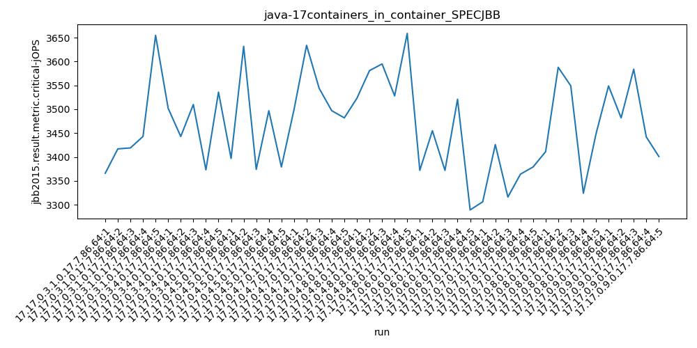

java-17 SPECJBB
Context at bottom
/home/jvanek/git/benchmarks-in-nested-virtualisation-toolchain/final_results/containers_in_container_results/containers_in_container_DACAPO
java-17
SPECJBB
/home/jvanek/git/benchmarks-in-nested-virtualisation-toolchain/final_results/containers_in_container_results/containers_in_container_JMH
java-17
SPECJBB
/home/jvanek/git/benchmarks-in-nested-virtualisation-toolchain/final_results/containers_in_container_results/containers_in_container_SPECJBB
java-17
SPECJBB
containers_in_container_SPECJBB
- containers_in_container_SPECJBB - max-jops
- containers_in_container_SPECJBB - critical jops
containers_in_container_SPECJBB - max-jops
Expected number of java-17 JDKs: 9
1st avgmed_alljdks_metric:
/home/jvanek/git/benchmarks-in-nested-virtualisation-toolchain/final_results/result_processing.py /home/jvanek/git/benchmarks-in-nested-virtualisation-toolchain/final_results/containers_in_container_results/containers_in_container_SPECJBB jbb2015.result.metric.max-jOPS False
values: [9606, 9585, 10047, 9931, 10047, 9931, 9700, 9816, 9816, 9931, 9585, 9816, 9641, 9653, 9816, 9686, 9931, 10162, 9748, 9931, 9816, 9931, 9855, 9700, 9816, 9641, 9641, 9653, 9700, 9534, 9858, 9534, 9550, 9550, 9855, 9700, 9354, 9756, 9700, 9931, 9700, 9641, 9585, 9700, 9585]

Expected number of iterations: 5
final number of values: 45 out of 45
Pass rate: 100.0%
values: (9354, 10162, 9748.111111111111, 9700)

** accuracy from all jdks and runs
more is better
MIN: 9354
MAX: 10162
AVG: 9748.111111111111
MED: 9700
Relative differences 1:
MIN-MAX: 8.0 %
MIN-AVG: 4.0 %
MIN-MED: 4.0 %
MAX-MIN: -9.0 %
MAX-AVG: -4.0 %
MAX-MED: -5.0 %
AVG-MED: -0.0 %
stored to java-17.properties. sort | uniq that!
2nd avgmed_by_jdk_metric:
values: [9843.2, 9838.8, 9702.2, 9891.6, 9823.6, 9633.8, 9669.4, 9688.2, 9642.2]

values: [9931, 9816, 9653, 9931, 9816, 9641, 9550, 9700, 9641]
values: (9633.8, 9891.6, 9748.111111111111, 9702.2)
values: (9550, 9931, 9742.111111111111, 9700)

** accuracy from all jdks where runs were avged
more is better
MIN: 9633.8
MAX: 9891.6
AVG: 9748.111111111111
MED: 9702.2
Relative differences 1:
MIN-MAX: 3.0 %
MIN-AVG: 1.0 %
MIN-MED: 1.0 %
MAX-MIN: -3.0 %
MAX-AVG: -1.0 %
MAX-MED: -2.0 %
AVG-MED: -0.0 %
stored to java-17.properties. sort | uniq that!
** accuracy from all jdks where runs were medianed
more is better
MIN: 9550
MAX: 9931
AVG: 9742.111111111111
MED: 9700
Relative differences 1:
MIN-MAX: 4.0 %
MIN-AVG: 2.0 %
MIN-MED: 2.0 %
MAX-MIN: -4.0 %
MAX-AVG: -2.0 %
MAX-MED: -2.0 %
AVG-MED: -0.0 %
stored to java-17.properties. sort | uniq that!
containers_in_container_SPECJBB - critical jops
Expected number of java-17 JDKs: 9
1st avgmed_alljdks_metric:
/home/jvanek/git/benchmarks-in-nested-virtualisation-toolchain/final_results/result_processing.py /home/jvanek/git/benchmarks-in-nested-virtualisation-toolchain/final_results/containers_in_container_results/containers_in_container_SPECJBB jbb2015.result.metric.critical-jOPS False
values: [3366, 3417, 3419, 3443, 3655, 3502, 3443, 3510, 3373, 3536, 3397, 3632, 3374, 3497, 3379, 3499, 3634, 3544, 3497, 3482, 3523, 3581, 3595, 3528, 3659, 3372, 3455, 3372, 3521, 3289, 3306, 3426, 3316, 3364, 3379, 3411, 3588, 3549, 3324, 3448, 3549, 3482, 3584, 3442, 3401]

Expected number of iterations: 5
final number of values: 45 out of 45
Pass rate: 100.0%
values: (3289, 3659, 3468.0666666666666, 3455)

** accuracy from all jdks and runs
more is better
MIN: 3289
MAX: 3659
AVG: 3468.0666666666666
MED: 3455
Relative differences 1:
MIN-MAX: 10.0 %
MIN-AVG: 5.0 %
MIN-MED: 5.0 %
MAX-MIN: -11.0 %
MAX-AVG: -6.0 %
MAX-MED: -6.0 %
AVG-MED: -0.0 %
stored to java-17.properties. sort | uniq that!
2nd avgmed_by_jdk_metric:
values: [3460.0, 3472.8, 3455.8, 3531.2, 3577.2, 3401.8, 3358.2, 3464.0, 3491.6]

values: [3419, 3502, 3397, 3499, 3581, 3372, 3364, 3448, 3482]

values: (3358.2, 3577.2, 3468.0666666666666, 3464.0)
values: (3364, 3581, 3451.5555555555557, 3448)

** accuracy from all jdks where runs were avged
more is better
MIN: 3358.2
MAX: 3577.2
AVG: 3468.0666666666666
MED: 3464.0
Relative differences 1:
MIN-MAX: 6.0 %
MIN-AVG: 3.0 %
MIN-MED: 3.0 %
MAX-MIN: -7.0 %
MAX-AVG: -3.0 %
MAX-MED: -3.0 %
AVG-MED: -0.0 %
stored to java-17.properties. sort | uniq that!
** accuracy from all jdks where runs were medianed
more is better
MIN: 3364
MAX: 3581
AVG: 3451.5555555555557
MED: 3448
Relative differences 1:
MIN-MAX: 6.0 %
MIN-AVG: 3.0 %
MIN-MED: 2.0 %
MAX-MIN: -6.0 %
MAX-AVG: -4.0 %
MAX-MED: -4.0 %
AVG-MED: -0.0 %
stored to java-17.properties. sort | uniq that!
/home/jvanek/git/benchmarks-in-nested-virtualisation-toolchain/final_results/containers_in_container_results/containers_in_container_RADARGUNs1
java-17
SPECJBB
/home/jvanek/git/benchmarks-in-nested-virtualisation-toolchain/final_results/containers_in_container_results/containers_in_container_J2DBENCH
java-17
SPECJBB
/home/jvanek/git/benchmarks-in-nested-virtualisation-toolchain/final_results/containers_in_container_results/containers_in_container_RADARGUNs3
java-17
SPECJBB
pass rates:
containers_in_container_SPECJBB=100.0%
Context:
- containers_in_container_results
- SPECJBB